A practice companion for Bharatanatyam dancers
Log sessions. Discover patterns. Grow with intention.
A reflective intelligence system designed from within the culture of the practice itself — not imposed upon it.
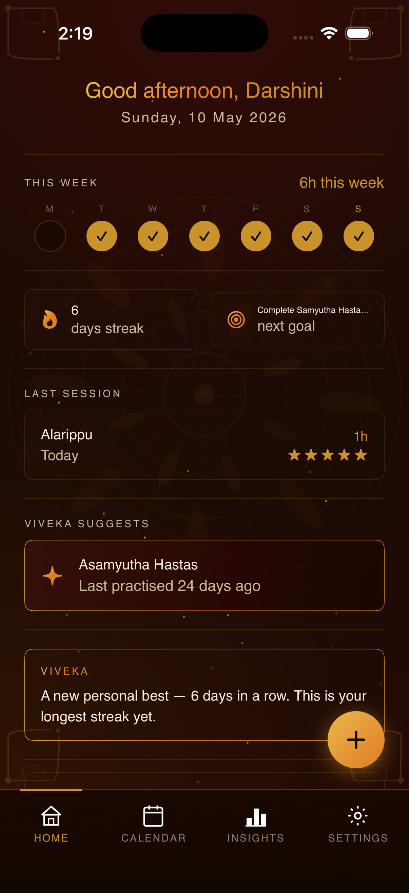
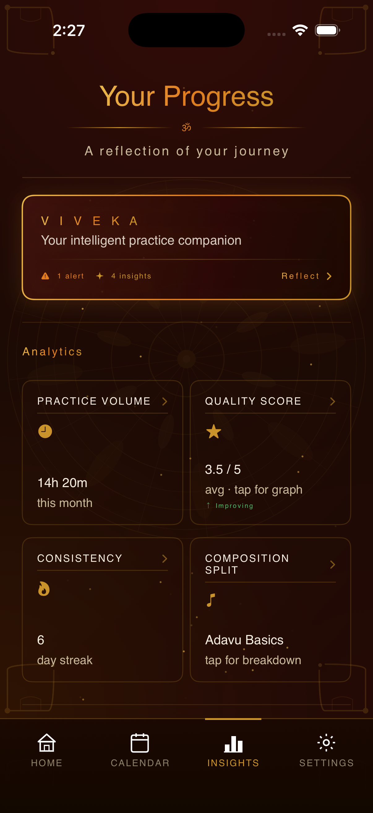
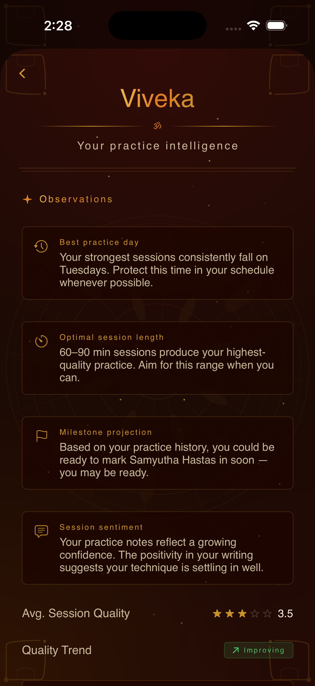
The problem
Bharatanatyam is not a skill acquired in a straight line. It is a tradition accumulated over years through repetition, reflection, and patient attentiveness to one's own development. The students who grow are often the ones aware not just of how much they practise, but of how and when.
Over nine years within the Bharatanatyam community, this lack of reflective structure proved extremely common across students of all ages and experience levels. Growth is often felt emotionally but rarely examined systematically.
Existing tools do not meaningfully support this form of practice. Generic habit trackers, fitness apps, and productivity timers are designed around repetition and output. Bharatanatyam carries its own vocabulary, pedagogy, emotional rhythms, and long-term progression structure. Treating it like a generic productivity activity strips away much of what makes the practice meaningful.
"Sanchana was born from the idea that Bharatanatyam students deserve a system designed from within the culture of the practice itself."
What it does
Log each session with the composition practised, duration, a quality self-rating from 1–5, and free-text reflections. Transform practice from something temporary into something reviewable — gaining visibility into patterns across months.
A spatial representation of practice history through colour-coded indicators and date-specific entries. Visualise effort across entire months so accumulated consistency is never psychologically invisible.
Goals represented visually through dated milestones and progress pathways. Connect daily practice with longer-term artistic progression and maintain a clear sense of direction and momentum toward performances and examinations.
A reflective intelligence layer — not a recommendation engine — that analyses long-term behavioural patterns across practice history and quietly surfaces observations that students may not notice themselves.
On-device NaturalLanguage analysis across practice reflections. When patterns across sessions consistently reflect positive or negative emotional tone, Viveka surfaces those observations. All analysis stays entirely on-device — always.
Periodic reports synthesise raw session data into readable summaries — activity trends, composition breakdowns, quality averages, and narrative observations composed by Viveka from the student's own history.
Practice intelligence
V I V E K A · ॐ · Your practice intelligence
Early versions of Viveka generated direct recommendations — more practice, less practice, focus on specific compositions. These were removed. Students already receive instruction, correction, and direction from teachers. Repeating information the student already knows adds little value.
The more meaningful gap within the community was not a lack of instruction, but a lack of reflective visibility. Viveka was redesigned as a companion intelligence layer that highlights overlooked behavioural patterns, contextualises progress, and quietly surfaces information users may not notice themselves.
Reflection still belongs to the student. The intelligence layer exists only to support awareness — never to replace agency.
App screens
Warm tones inspired by Bharatanatyam performance environments and traditional costume palettes. Every design choice reinforces the app's role as a reflective companion — not a generic productivity tool.
Home
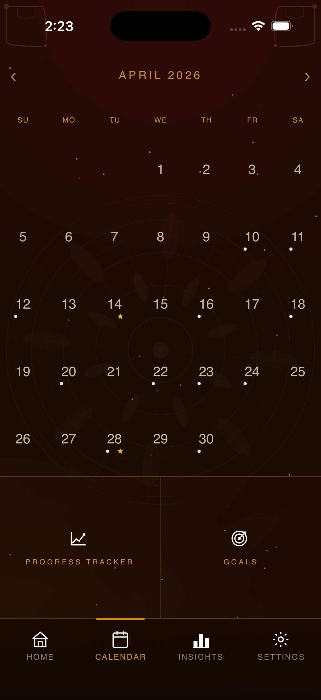
Calendar
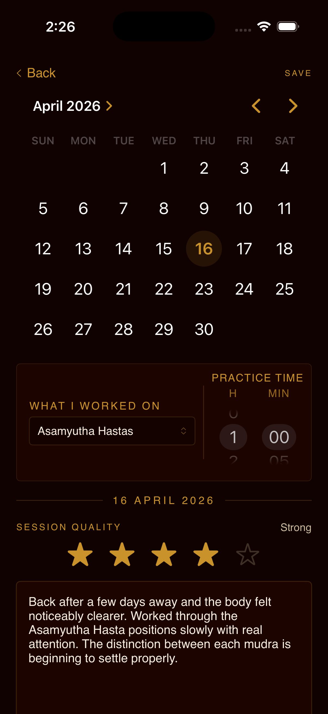
Log Session
Insights
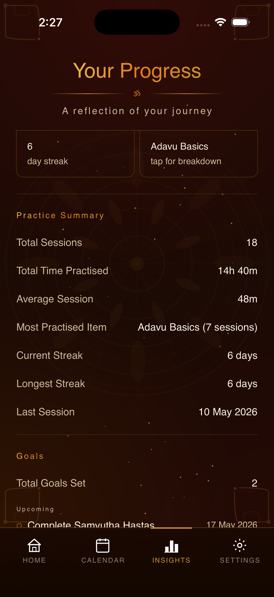
Practice Summary
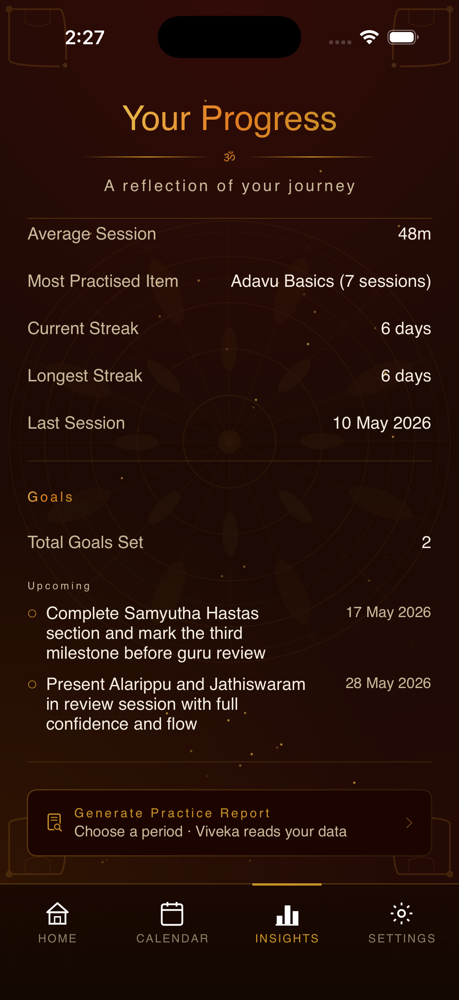
Goals
Viveka · Observations
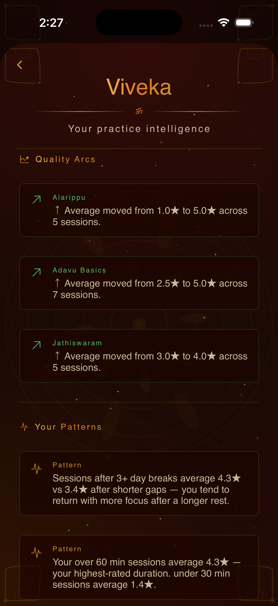
Viveka · Quality Arcs
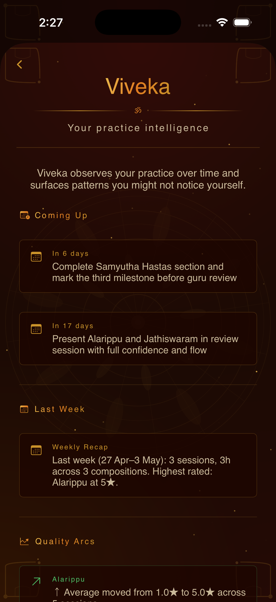
Viveka · Coming Up
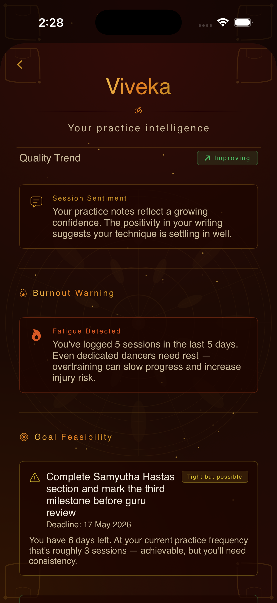
Viveka · Burnout Warning
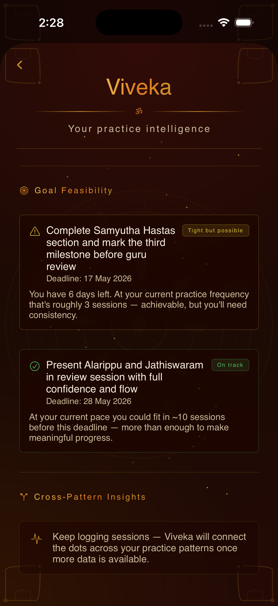
Viveka · Goal Feasibility
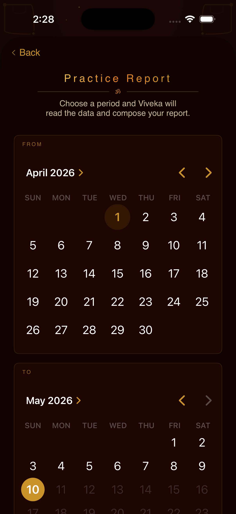
Report · Date Range
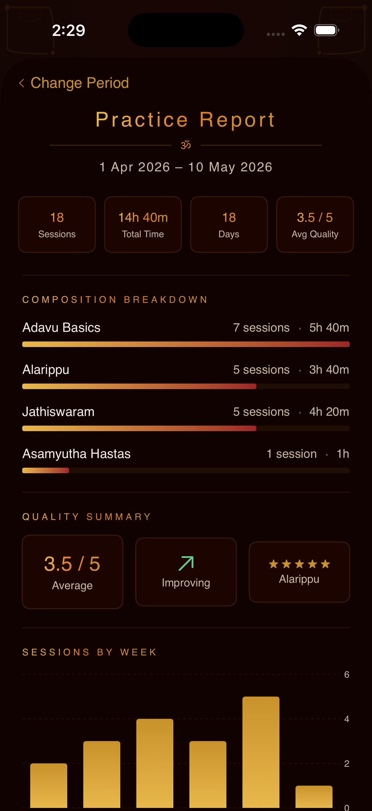
Practice Report
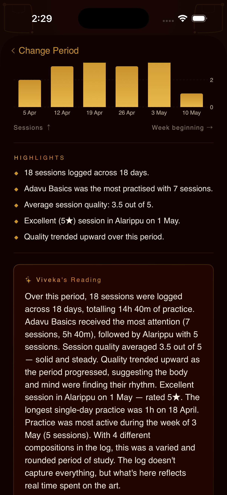
Report · Viveka's Reading
How it's built
A native iOS app written entirely in SwiftUI with no external dependencies. Every architectural decision prioritises privacy, reliability, and proportional complexity — using the right tool for the actual problem, not the impressive one.
Design decisions & honest shortcomings
Every trade-off in Sanchana was made deliberately. CoreData was evaluated and rejected — the data is single-device, structurally simple, and lightweight enough that a relational database would introduce complexity without benefit. No external ML library was introduced because Apple's NaturalLanguage framework runs entirely on-device, preserving the privacy-sensitive nature of reflective practice writing.
Known limitations include universal burnout thresholds that may not perfectly reflect individual norms, session duration as a proxy for quality rather than a direct measure, and short remarks under 15 words being excluded from sentiment analysis for reliability. Each limitation is documented, understood, and accepted as the most proportional solution at the current scale.
Future directions
About
Sanchana emerged from nine years within the Bharatanatyam community — observing a practice community whose workflows are rarely considered within mainstream software design. The absence of reflective systems for Indian classical arts practitioners highlighted how many technologies are implicitly designed around more visible or commercially prioritised communities.
Designing from the realities of this community rather than from a generic feature template shaped every architectural and interaction decision within the project. The hardest part of building an intelligent system is deciding what information deserves interpretation and what should remain under the user's control.
Built with SwiftUI and Apple's NaturalLanguage framework. No external dependencies. No data leaves the device.